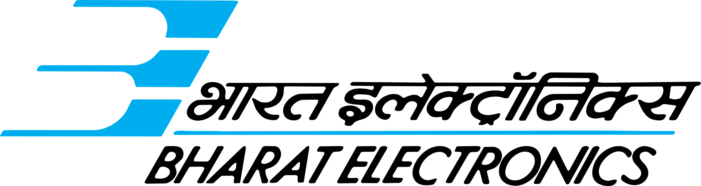

I am currently working as a Software Developer at Walmart Global Tech, where I tackle exciting
challenges at the pioneer of supply chain innovation. With a background in Machine Learning research, I
have contributed to various impactful projects and had the privilege of being supervised by exceptional
researchers across multiple domains.
Previously, as a Mitacs Globalink Research Scholar at the University of Toronto, I worked on ‘GNNs for Optoelectronic Materials’ under the supervision of Oleksandr Voznyy at the Clean Energy Lab. At Nanyang Technological University, I explored Deep Learning for Audio Signal Processing under the guidance of Prof. Chng Eng Siong at the Speech and Language Lab. I am passionate about sharing my experiences and helping others navigate their journeys in technology.
I'm a graduate from Birla Institute of Technology and Science Pilani, India with a Bachelors in Computer Science and a Masters in Chemistry in 2024.
Beyond tech, I'm passionate about mentorship and community building. As a volunteer with the BITSAA Alumni Mentorship Program, I help connect students and alumni with experienced mentors across diverse industries. Our team facilitates mentor-mentee matching, organizes mentorship sessions, and coordinates networking events to strengthen the BITSian community.
Outside of work, I'm a professional photographer—streets and wildlife are my favorite subjects. I was fortunate to lead the incredible Department of Photography at BITS Pilani, where I learned that managing creative talent is as challenging as it is rewarding. I also play golf, a game that’s somehow way harder than debugging code but just as satisfying when things finally click (do they ever?).
For more information about me, you can view my resume here or reach out to me on my email!Institution Logos

Previously, as a Mitacs Globalink Research Scholar at the University of Toronto, I worked on ‘GNNs for Optoelectronic Materials’ under the supervision of Oleksandr Voznyy at the Clean Energy Lab. At Nanyang Technological University, I explored Deep Learning for Audio Signal Processing under the guidance of Prof. Chng Eng Siong at the Speech and Language Lab. I am passionate about sharing my experiences and helping others navigate their journeys in technology.
I'm a graduate from Birla Institute of Technology and Science Pilani, India with a Bachelors in Computer Science and a Masters in Chemistry in 2024.
Beyond tech, I'm passionate about mentorship and community building. As a volunteer with the BITSAA Alumni Mentorship Program, I help connect students and alumni with experienced mentors across diverse industries. Our team facilitates mentor-mentee matching, organizes mentorship sessions, and coordinates networking events to strengthen the BITSian community.
Outside of work, I'm a professional photographer—streets and wildlife are my favorite subjects. I was fortunate to lead the incredible Department of Photography at BITS Pilani, where I learned that managing creative talent is as challenging as it is rewarding. I also play golf, a game that’s somehow way harder than debugging code but just as satisfying when things finally click (do they ever?).
For more information about me, you can view my resume here or reach out to me on my email!
Present

2021
2023 - 2024
2024